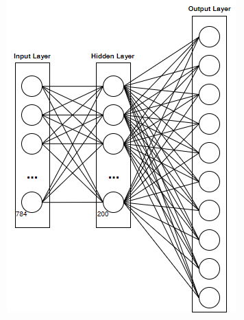

Draw a single digit number in the box!
MNIST is a database of handwritten digits that is often used to train machine learning image processing systems. The database can be viewed here.
Written in Java instead of the traditional Python method, a Convolutional Neural Network (CNN) analyzes the MNIST training data of 60,000 28x28 pixel images until it eventually finds an algorithm which can be applied to recognize new handwritten digit examples.
Think of each pixel as a node. With 784 (28x28 pixels) nodes per image, the first layer of the Neural Network starts by analyzing the grayscale color at each of these nodes. If the colors at respective nodes darken to form a rough circle, the Neural Network may conclude that the image could be a 0, 8, 6, or 9.
Next, to connect the Input Layer and the Hidden Layer, a weight is assigned based on the confidence in which number the image might represent at this point in the Neural Network. Each input node (each of the 784 pixels) is then multiplied by the weight and a sigmoid function is applied to narrow the target even further. The value of this calculation is declared the result of the 200 nodes in the hidden layer.
The Hidden Layer is multiplied by another weight, and a sigmoid function is applied once again. This results in the Output Layer of only 10 nodes (0-9).
This is where the Output Layer is compared to the target values. For example, if the handwritten digit is a 3, then the Neural Network's final array should return [0,0,0,1,0,0,0,0,0,0], to represent that 3 is the correct digit. However, if it does not identify the digit as a 3, then the algorithm will alter the weights to account for the difference between the predicted and actual values. This is how the Neural Network "learns"!
In order to increase the algorithm's accuracy (only about 97% accurate), the rate at which the CNN analyzes images is slowed down. Similarly, to increase the number of trials, the entire process of training through all 60,000 images is repeated 10 times as 10 epochs.